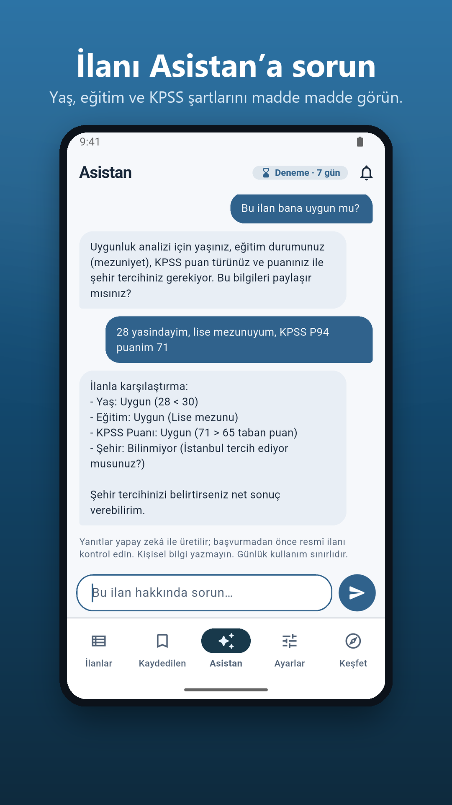

Kamu işi ararken, şartlar daha anlaşılır.
İlanı bulun.
Şartları anlayın.
Memur, işçi, belediye ve akademik kadro ilanlarını inceleyin. “Bu ilan bana uygun mu?” sorusunu KamuBul Asistan’a sorun; yaş, eğitim ve puan koşullarını birlikte değerlendirin.
Android için ücretsiz indirinHesap açmadan başlayın. Pro isteğe bağlıdır.
KamuBul bağımsız bir uygulamadır; resmî bir devlet uygulaması değildir. Başvuru öncesinde resmî ilan metnini kontrol edin.

İlandan başvuruya,
daha az belirsizlik.
İlanı bulmak başlangıç. Asıl mesele, hangi şartı nereden kontrol edeceğinizi anlamak.
- 1
İlanları daraltın
Şehir, eğitim, yaş, meslek ve puan kriterlerinizi seçin. İlgilendiğiniz aramaları ve ilanları kaydedin.
- 2
Şartları açın
Kontenjanı, pozisyonları ve son tarihi görün. Uzun metni okuyun veya seçili ilanı Asistan’a sorun.
- 3
Resmî kaynağa geçin
Güncel şartları kurumun sayfasından doğrulayın. Başvurunuzu ilanda belirtilen resmî kanaldan yapın.
Her şartın
aynı cevabı yok.
“Uygun”, “Uygun değil” ve “Bilinmiyor” ayrımı, başvuru öncesinde dikkat etmeniz gereken noktaları görmenize yardımcı olur.
Asistan’a yalnız değerlendirme için gereken bilgileri yazın. T.C. kimlik numarası, telefon veya başvuru belgesi paylaşmayın.
Nasıl okunur? Örnek değerlendirme
İlandaki yaş sınırıyla verdiğiniz yaşı karşılaştırın.
İstenen öğrenim düzeyi karşılanmıyorsa farkı görün.
Bilgi eksikse resmî şartı ayrıca kontrol edin.
Bu örnek bir işe uygunluk kararı değildir. Bağlayıcı olan resmî ilan metnidir.
İlanlara bakmak
ücretsiz.
Temel ilanlar ve filtreler için Pro gerekmez. İlk 7 gün reklamsız kullanımın ardından ücretsiz sürümde reklam gösterilebilir.
Kaydettiğiniz ilanları çevrimdışı açın, yazı boyutunu ayarlayın, açık veya koyu temayı seçin.
| Özellik | Ücretsiz | Pro |
|---|---|---|
| İlanlar ve filtreler | Var | Var |
| Asistan soru hakkı | 10 / gün | 50 / gün |
| Reklamlar | İlk 7 gün yok | Yok |
Pro aylık aboneliktir. Güncel fiyat ve yenileme koşulları satın almadan önce Google Play’de gösterilir; aboneliğinizi Google Play’den yönetebilirsiniz.
Aklınızda kalanlar
Hesap açmam gerekiyor mu?
Hayır. KamuBul’u hesap açmadan kullanabilirsiniz. Kaydedilen ilanlar ve aramalar cihazda tutulur; bildirimleri açarsanız hizmet için gereken kriterler sunucuya iletilir. Ayrıntılar gizlilik politikasındadır.
Hangi kamu ilanları var?
Memur, sözleşmeli personel, kamu işçisi, belediye ve akademik kadro ilanları desteklenen kaynaklardan derlenir. Yalnız kendi sitesinde yayımlanan her kurum ilanının kapsandığı garanti edilmez; kaynak erişiminde kesinti olduğunda bilgi eksik veya gecikmeli olabilir.
İlanlar nereden geliyor?
Desteklenen kaynaklar Kariyer Kapısı, ilan.gov.tr, İŞKUR ve SBB kamu ilanlarıdır. İŞKUR için yalnız kamu ilanları hedeflenir. Güncel ve bağlayıcı metni her zaman resmî sayfadan kontrol edin.
Asistan başvuruya uygun olduğumu garanti eder mi?
Asistan ilan şartlarını açıklamaya yardımcı olur. Yapay zekâ yanıtları hata içerebilir; eksik bilgiler için “Bilinmiyor” sonucu çıkabilir. Nihai kontrolü resmî ilan üzerinden yapın; başvuruyu KamuBul göndermez.
Yeni ilanlardan nasıl haberdar olurum?
Kriterlerinizi kaydedip isteğe bağlı bildirimleri açabilirsiniz. Yeni eşleşen ilan bildirimlerinin ulaşması cihaz, izin ve ağ koşullarına bağlıdır. Son başvuru tarihlerini uygulamadaki tarih ve kalan gün bilgileriyle takip edin.
iPhone’da kullanabilir miyim?
iOS sürümü App Store için hazırlanıyor; yayınlandığında bu sayfadan duyurulacak. iOS sürümünde reklam ve abonelik bulunmayacak. Android sürümüne Google Play bağlantısından ulaşabilirsiniz.